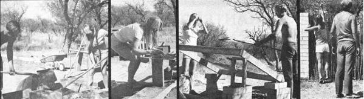

Pressed Earth Blocks: Make 'Em Yourself!
Why pay upwards of 30 cents apiece for ordinary cement blocks...when-with the aid of a shovel, a small amount of Portland cement, and something called a CINVA Ram-you can make your own highly durable and enormously versatile pressedearth blocks for approximately 3/10 of a penny each?
By Charles Park
July/August 1978
Several seasons ago, my wife and I were looking for a place of our own where we could fill our lungs with clean, fresh air, keep ourselves in good physical shape, and-- general-live the good life. We found what we were looking for when we bought a small ranch near Nogales, Arizona, right on the Mexican border.
Unfortunately, there was one small catch. "if you want to live here," the former owner advised us, "you'll have to get used to the idea of scores of animals-cows, burros, horses, coyotes, dogs, and rabbits-going across your land every day en route from feed to water."
We certainly had no desire to harass any animals ... but when we heard that the land we'd bought (including the site of our future garden) was situated in the middle of a veritable expressway for wildlife traffic, we knew Immediately that something would have to be done to reroute the local critters.
A chain-link (or comparable) fence would have done the job, of course ... but would have been too costly to erect and ugly once it was up. We also ruled out the Idea of erecting a massive wall as too expensive land too confining: who wants to live in a prison?).
Ultimately, we arrived at a compromise solution: We decided to put up a combination wall/fence made of alternating sections of pressed-earth blocks and ocotillo poles.
WHY THAT COMBINATION?
We chose to go the compacted soil and transplanted ocotillo route for three reasons. First of all, with a half-plant/ half-brick m barrier we could enjoy the security afforded e by a solid wall . . . yet (thanks to the 1 ocotillos' "see-through" sections) not feel "walled In". Second, the "raw materials" for the enclosure were close at hand and available in unlimited supply.
Third, you can't get many building materials that cost less than dirt and ocotillos. Our do-it-ourselves compacted-earth blocks (which contain a small amount of portland cement "stabilizer") set us back no more than 3/10 of a cent each (versus 32Q apiece for cement blocks) . . . and the tall, spiny ocotillos (which grow thick and wild around here) were free except for a $1.00 fee thatunder current conservation laws-must be paid to the state each time one of the thorny plants is uprooted. (Even at the rate of $1.00 per shrub, however, the ocotillo portions of our fence cost only about 30C per lineal foot. That's a far cry from the $3.00 per lineal foot we'd have had to shell out for cedar fencing!) Of course, we didn't count the cost of our labor in building the wall: The physical exercise involved was a net benefit land was one of the main reasons that we moved here to begin with).
WE DIDN'T NEED MANY TOOLS
The tools we used in the construction of our wall/ fence Included a pick, shovel, hoe, sprinkling can, sifting frame (a piece of 1/4"-mesh screen mounted on a 4' X 4' frame made of two-by-fours), and-most important of all-a CINVA Ram.
The CINVA Ram is nothing more than a manually operated press that converts ordinary earth (along with a small amount of cement) into substantial 4" X 6" X 12" blocks. ("CINVA" is the Spanish acronym for the Inter-American Housing and Planning Center of Bogota, Colombia ... and Ram comes from the name of Paul Ramirez, the Chilean engineer who Invented the brickmaking device.) We bought ours from the Schrader Bellows Division of Scovill Manufacturing Company (P.O. Box 631, Akron, Ohio 44309) for $250. (At the time, $250 seemed like a lot of money .. . but we've more than earned back that Investment, considering the thousands of 32Qapiece construction blocks we haven't had to buy since we purchased the simple machine.)
Just about any kind of earth can be used in the CINVA Ram to make blocks, as long as the soil contains a little clay and sand. (The dirt should be completely free of !eaves, twigs, and other organic material, however.! To find out whether your soil is suitable for blockmaking, all you have to do is f11 fill a wide-mouthed glass jar half full of pre-sifted (to remove large contaminants) earth, 121 add an equal amount of water, 131 cover the jar and shake it vigorously for a few minutes, then 141 allow the container to stand undisturbed for 30 minutes. At the end of this period, the soil will have separated into three layers: sand on the bottom, clay in the middle, and silt on top. The best blocks are made from a mixture of about 75% sand, 15 to 20% clay, and 5 to 10% silt. If your soil varies too far from this ideal, it's a simple matter to add enough supplemental sand, clay, or silt to even the formula out.
Next, determine how much cement you'll have to add to the earth-to make your blocks "set up" right-by performing a "shrinkage test". First construct a wooden box-open at each end-with inside dimensions of 1-1 / 2" X 1-1 I2" X 24". Then grease the interior of the container-old motor oil is fine and pack it full with moist, presifted earth. Finally, let the box sit for a few days (until the soil has completely dried).
As it dries, the dirt will shrink into a narrow block somewhat smaller-In all dimensions-than the box !t was formed in. What you want to do with the completely cured block is push it down to one end of the container and measure the amount of contraction. Our soil shrunk between 1 / 2" and 1 " in this test, which meant we needed to stabilize every 16 parts of the soil with one part cement. (Had the shrinkage been more than 1 ", we would've needed to use proportionately more "binder".)
THE BLOCKMAKING PROCESS
The first step In making pressed-earth blocks Is to prepare the soil/water/cement "mix". To do this, we sifted the earth we Intended to use to free It of gravel and organic residue (which we spread over our yard In lieu of a water-demanding lawn). Then we dumped 16 shovelfuls of the sifted soil Into our mixing container (which was actually an old sandbox) along with a shovelful of cement, and blended the two together until the mix became a uniform color and consistency.
Next, It was time to add water. Proper moisture content is very important: A mix that's too dry makes for blocks which have built-in cracks, while a too-wet soil-cement blend produces bricks that bend or fall apart as they're transported to their curing site. A good rule of thumb !s: if a handful of the damp mix-when squeezed tightly in your handwill cling together without leaving moisture in your palm, it's just right. (A gallon and a half of water per 16 shovelfuls of soil proved about right for us.)
Converting the final soil-cement-water mix into blocks is easy: All you have to do is load the CINVA Ram's mold with moist earth, pull down on the machine's long handle, throw the lever over, and (very carefully) lift out the damp block.
CURING TIME
The way the CINVA Ram bricks are cured can be just as critical to their ultimate strength as the mix of earth, water, and cement which goes into them. In general, the more slowly the blocks dry, the stronger they'll ultimately be. This means-of course-that freshly made blocks cannot simply be left sitting in the hot sun. To keep our bricks from curing too fast, we always covered them with black plastic right after they came out of the Ram. They then set up without losing excessive amounts of moisture too fast, and could be moved (carefully) by the end of the day or the following morning after they had been pressed.
CINVA Ram blocks, we've learned, can be stacked as high as five deep within a day of their manufacture. (Starting from the time they were stacked for curing, we sprinkled our blocks with water three times a day for a few days so thatonce again-they wouldn't cure too quickly.) Within eight days of leaving the mold, the bricks can be laid up in a wall (using the same construction methods you'd employ with ordinary concrete blocks), after which they continue to harden and gain strength for about 30 more days.
We always stacked our blocks to cure right where they were to be used (thus keeping needless carrying of the bricks back and forth to a minimum). Likewise, we always set up our blockmaking plantthe sifting screen, the mix-box, and the Ram-right where we Intended to build. (That's one of the nice things about pressed-earth construction: Instead of hauling tons of blocks from one site to another, you can move the brickmaking plant itself!)
FINISHING TOUCHES
Once laid up, the natural blocks-which tend to be an attractive "natural" color that blends with the surroundings-need nothing more In the way of an applied finish (exceptperhaps-for a coat of masonry sealer If you happen to live In an area that gets a good deal of precipitation). In our case, we wanted a wall that would both 111 withstand Nogales' torrential summer rains and belowfreezing winter temperatures, and 12) match the color of our house. For these reasons, we decided to give our wall a coat of waterproofing and then cover that with an acrylic latex flat paint.
THE IDEAL BUILDING MATERIAL?
There's probably no limit to the number of ways in which pressed-earth blocks can be used. (We're already planning the construction of a storage shed and a carport made of soil-cement.) Fact is, the very qualities that led us to use these blocks in our wallstrength, low cost, durability, ease of manufacture, and the "natural" look-would seem to make soil-cement an ideal housebuilding material too.
well, we may never build a whole house out of soil-cement . . . but we're definitely sold on pressed-earth construction. It's fun . . . it's good exercise . . . it doesn't cost an arm and a kneecap . . . and the final product just looks good. What more could a fellow or gal ask for?
EDITOR'S NOTE: For more information on CINVA-Ram blockmaking, be sure to read C.D. Folsom's excellent article, You Can Build With Soil-Cement Blocks, in MOTHER N0. 39, pages 28-31.
 Dirt: the raw material... The soil is screened through 1/4-inch mesh... Add the proper amount of water... Four hands speed up the blending |
 Moist earth is packed into the press... Properly made blocks lift out easily... The bricks--set with mortar--for a wall... The ocotillio is added. |
|